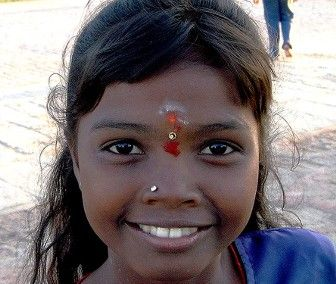
1. Pre Aryan civilised (Indus) Society
2. Arrival of Aryans and Rise of Bhramanism
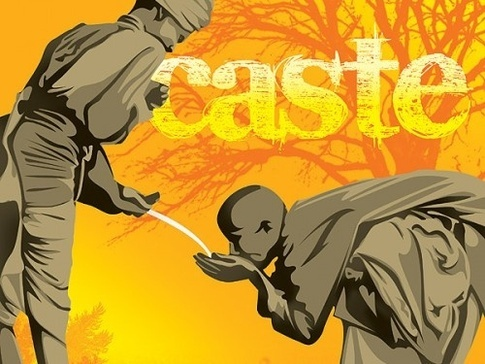
3. Persian and Greek Invaders
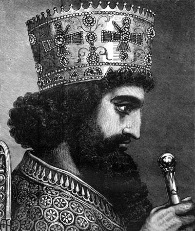
4. Arrival of Islam
5. Rise of Sufism and the Bhakti Movement
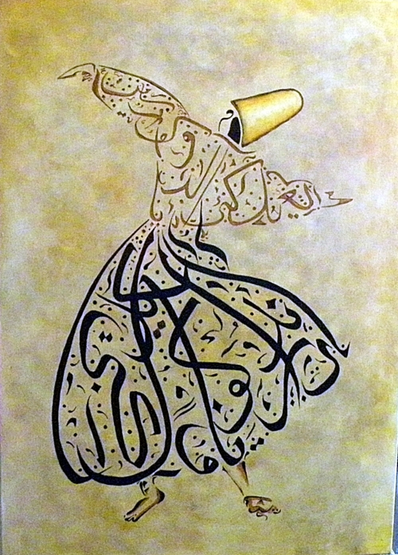
6. Birth of Guru Nanak
At the time India is suffering under tyranny and hypocrisy. Into these conditions. The first master is born.
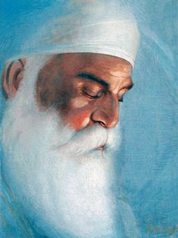
7. Guru Amar Daas Jee is Guru
Becomes Guru at 73!, dies at the ripe age of 95!
Guru Amar Daas Jee really works hard for gender equality
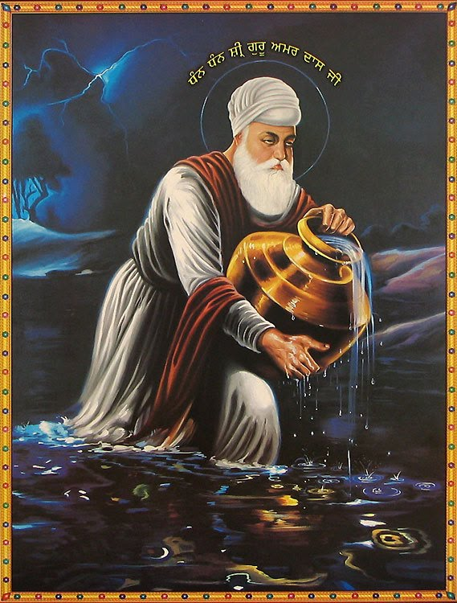
8. Aaad Granth Sahib jee is completed and venerated
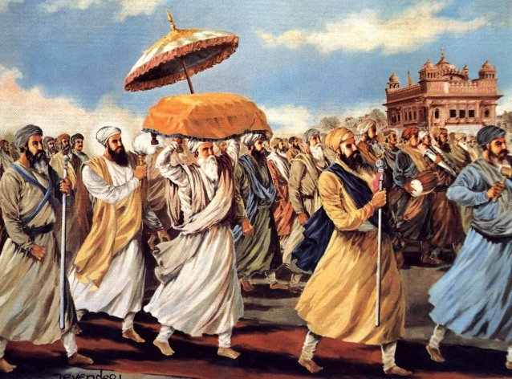
9. Shaheedi of Guru Arjan Dev Jee
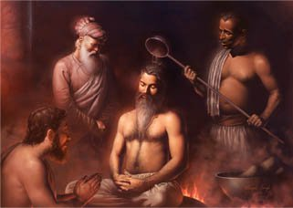
10. First battles under Guru Hargobind Sahib
''Internally a hermit, and externally a prince. Arms mean protection to the poor and destruction of the tyrant. Baba Nanak had not renounced the world but had renounced Maya
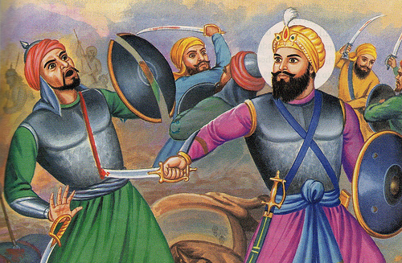
11. Mata Kaulan
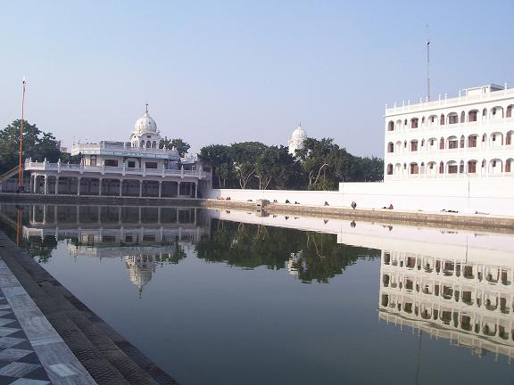
12. Guru Har Rai Sahib becomes Guru
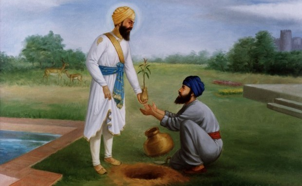
13. Martyrdom of Guru Tegh Bahadur Sahib
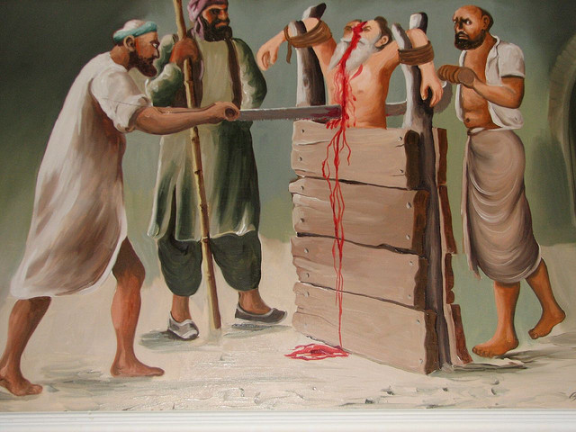
14. Birth of the Khalsa
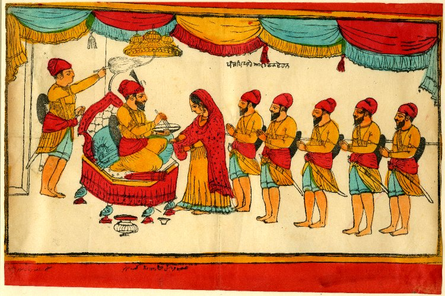
15. Sikh Battles and Shaheedi of Chaar Sahibzaade
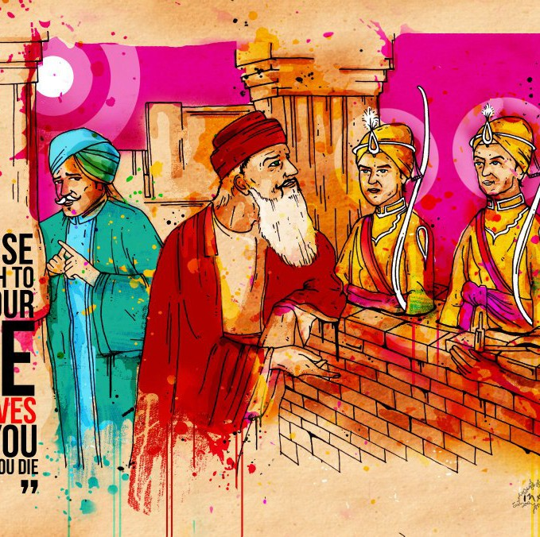
16. Harsharan Kaur - the last martyr of Chamkaur

17. Last of the Human Gurus and the Instantiation of Sabd Guru
GS - PPGuru Granth kalyug bhyo Sri Guru roop samaan Das Patshahian roop eh Guru Granth ji jaan
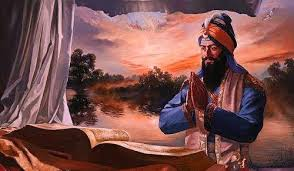
18. Banda Singh Bahadur
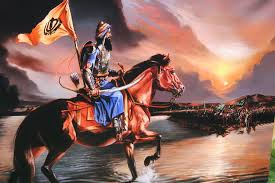
19. Smaller Holocaust
In 1757 Harimandir Sahib blown up and the sacred pool filled with entrails by Ahmed Sha Abdali.
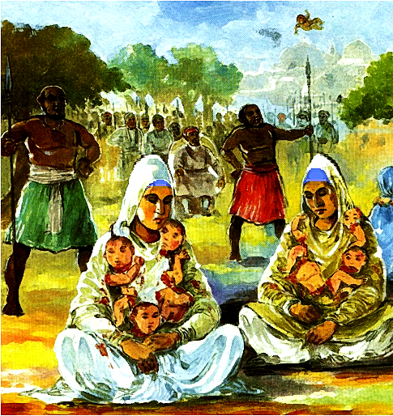
20. Larger Holocaust
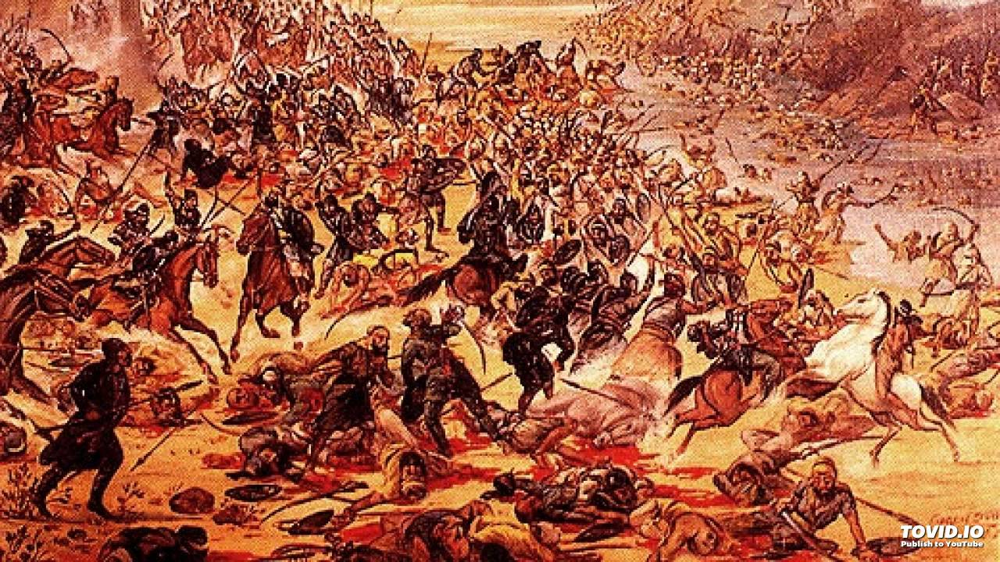
21. Misl (Confederacy) Period
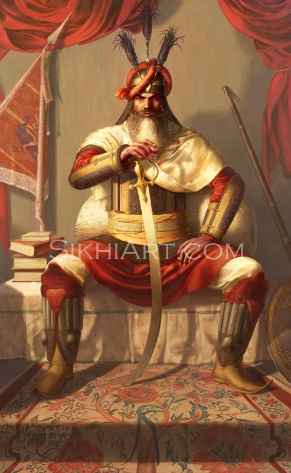
22. Sikh Kingdom
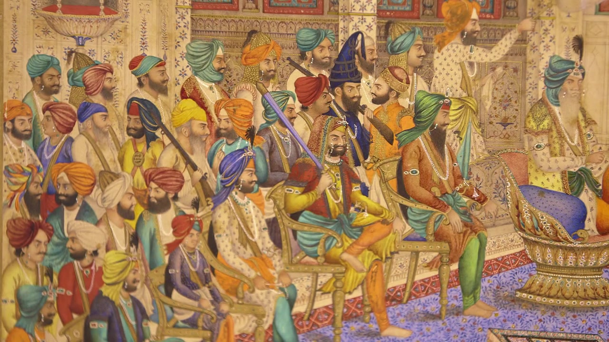
23. Arrival of the British
24. Singh Sabha Movement
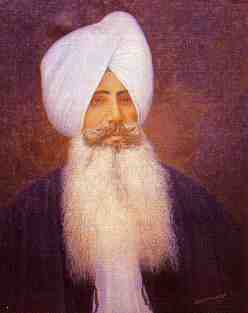
25. Akali Movement and 1925 Gurdwara Reform Act and rise of the SGPC
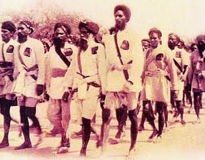
26. Introduction of the Harmonium
27. WW1 & WW2
'Finally, we that live on can never forget those comrades who in giving their lives gave so much that is good to the story of the Sikh Regiment. No living glory can transcend that of their supreme sacrifice, may they rest in peace. In the last two world wars 83,005 turban wearing Sikh soldiers were killed and 109,045 were wounded. They all died or were wounded for the freedom of Britain and the world and during shell fire, with no other protection but the turban, the symbol of their faith.'
- General Sir Frank Messervy KCSI, KBE, CB, DSO
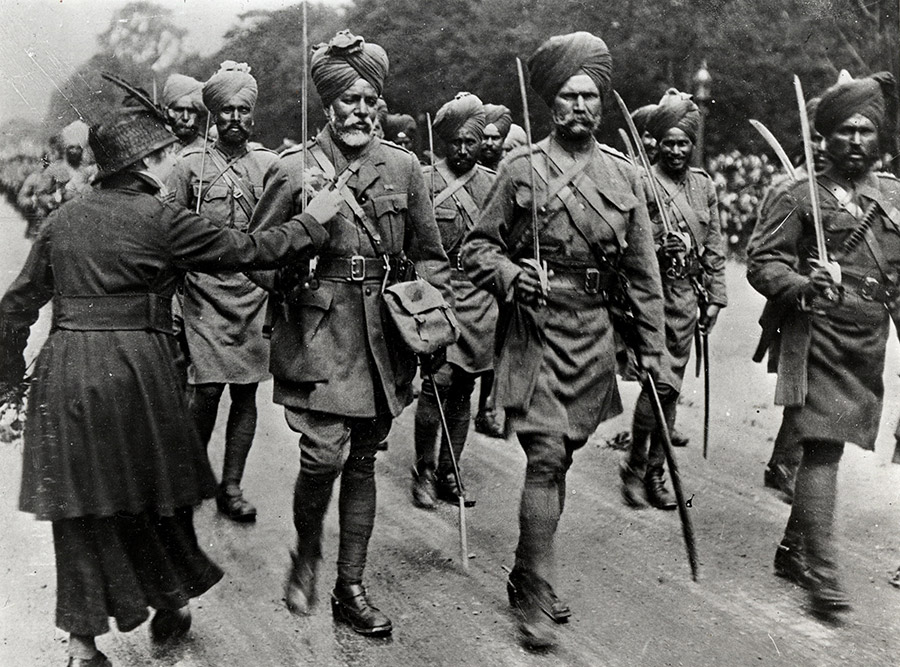
28. Independence & Partition
Post Indian independence the Mulsims lead by Jinnah petitioned the British to give them their own state before they handed India back. The British pretty much drew a line down the middle of Punjab and declared one side as Pakistan and one side as India. In the riots which preceded the partition in the Punjab Province, between 200,000 and 500,000 people were killed in the retributive genocide between the religions. UNHCR estimates 14 million Hindus, Sikhs and Muslims were displaced during the partition; it was the largest forced mass migration in human history.
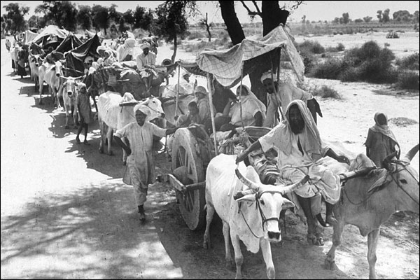
29. Punjabi Subha & Anandpur Sahib Resolution
In the independence struggle 77% of people to be hanged for independence were Sikh, 78% with life imprisonment were Sikh. Even though Sikhs were only 1.5% of India's population. Sikhs got a raw deal despite their sacrifices and promises made to them.
Sikhs wanted as part of Anandpur Sahib resolution (1973)
Sikhs really become a thorn in the Government's side
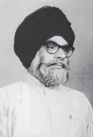
30. 1984 and Dehli Massacre
In 1975 Indira Gandhi is found guilty of electoral Fraud. She declares electoral fraud and throws the judiciary in jail [elaborate]... Again Sikhs are the one's to protest and stand up for the rest of India and become a thorn in her side over several issues. Eventually she sends in the army to crush the Sikhs.
Dehli Massacre
In Oct 1984, Indira is killed by her two Sikh bodyguards. The Government co-ordinates and facilitates anti-Sikh riots in Dehli.
The SSS has his first heart attack after Akaal Takht is attacked.
Dec 17th 2018, Sajjan Kumar (Indian politician) was sentenced for life for his involvment in the anti-Sikh riots.
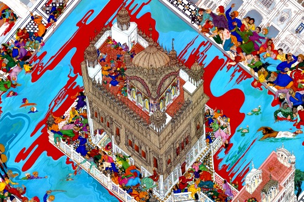
31. Second Major Ex-flux of Sikhs to western Diaspora
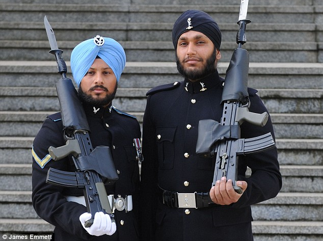
32. Present Day
Aad Sach. Jugaad Sach. Hai Bhi Sach. Nanak, Hosi Bhi Sach